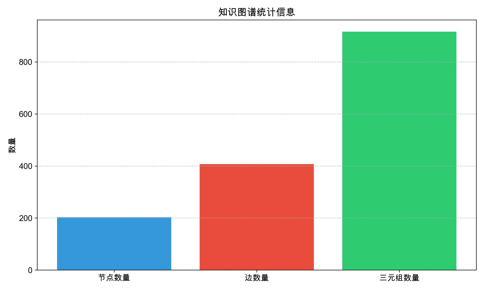
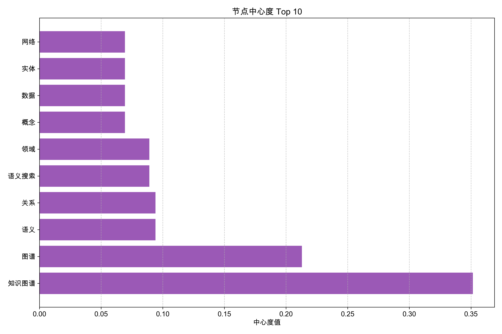
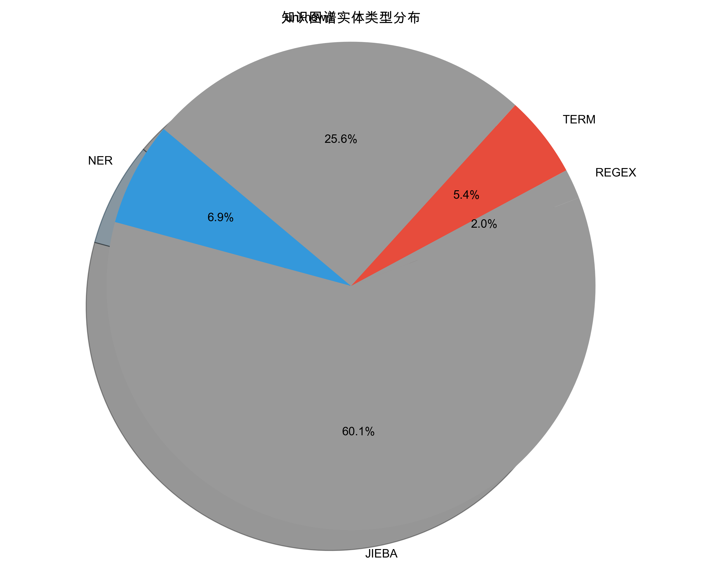

实体数量
1081
关系数量
3250
三元组数量
6008
知识图谱概览

上图展示了知识图谱的整体结构，不同颜色代表不同类型的实体和关系。节点表示实体，边表示实体间的关系。
统计分析

上图展示了知识图谱的基本统计信息，包括节点数量、边数量和三元组数量。

上图展示了知识图谱中中心度最高的10个节点，这些节点在图谱中起着关键作用，代表了知识网络中的核心概念。
分布分析

上图展示了知识图谱中不同类型关系的分布情况，反映了实体间的主要关联方式。

上图展示了知识图谱中不同类型实体的分布情况，反映了知识库中的主要概念类别。